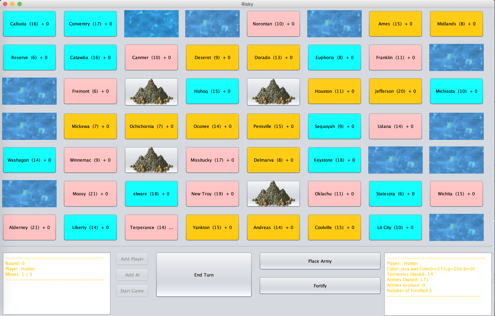

My name is Hunter Mahoney, I am currently a Computer Science Undergaduate at Winona State University. I got in to Computer Science about 5 or 6 years ago. This was after taking a Web Design class at Rochester Technical and Community College. After that i decieded to focus on furthing my education in the field of Computers. Throughout school I've learned a variety of different languages with Java being the primary focus. With Other languages being Python, Swift, C++, C#, F# though only a minor amount. I have also studied Html, CSS, and JavaScript.
With my main focus in school being in Java we have done a variety of projects. One project that was made by me and two others in my Data Structures class (during my first semester at Winona), was a take on the board game Risk. Much like Risk the game is all about controlling all the zones. You have the ability to move armies, and fortify armies which is used for defense. Everyone gets 1 fortify and attack per turn. For this project we ran out of time to implement Placing Armies and adding a simple AI.
Another project that i work on during my software engineering class was around a game called Munchkin. (Sadly that code has gone missing). This was a project that took me and three other people an entire semster to complete. Using the agile method of programming, we created a working munchkin lite. the game was far from perfect, but it made us realize the important of picking the correct langauge for a project.